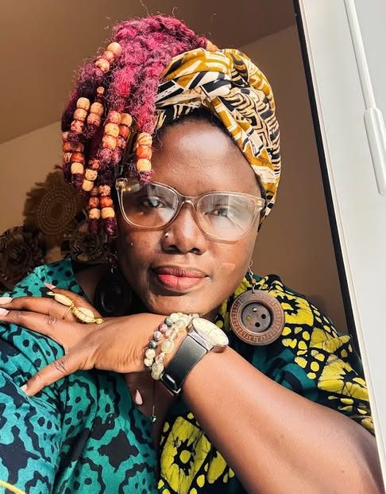

Poetry
I write as Omusulla, "the uprooted one." My poems follow journeys through rivers, forests, cities, seasons, and the people met along the way.
#theculturetrailbyomusulla
Featured poem
Born of Illusions
I am born of illusions and fantasies most of which may never make sense to anyone, even me I have longings and desires beyond my reach Yet the world has shown me enough to make me want to wait wait for the perfect time, hang on for the right person Sometimes that perfect time is now but not the right place. I am created of wants and needs most of which I am still figuring out And along the way the universe has guided me sometimes to take, sometimes to leave but never to stay and so I have kept going even when I have no idea where And so far, this journey has been a beautiful ball of self-discovery. I crave things, people, and even places Mostly, I have craved a space of my own, to be to never explain how my mind works or my feelings to be seen in my works of art or moments of silence to be heard in the echoes of my laughter and comforted in the whimpering of my tears and understood in my huffed silence, especially this I am born of illusions and fantasies to be touched with delicate desire to be held with the gentleness of a newborn to be desired like a spiritual healing to be cherished like an ancient piece of history and to be defined within the cultures of my being...
Readings & Videos
- ReadingWorld Poetry Night, University of Oregon · Watch on Instagram
From the blog: Nandiri Musings
- Apr 2025
- Feb 2025
- Feb 2025
- Sep 2024
- Oct 2023